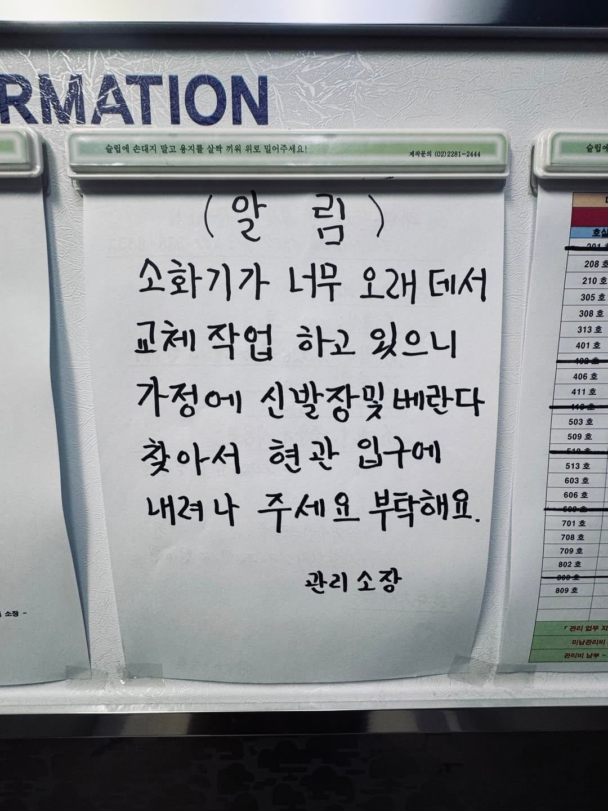
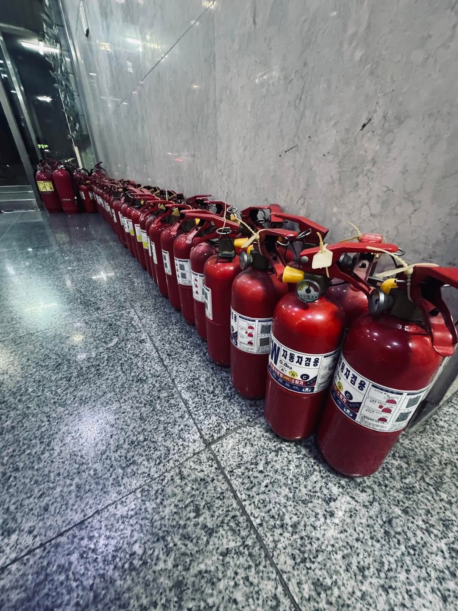

호수 써 놔야하는 거 아님?
폐기는 상관없어
새로 공급하는 소화기가 어느 호수에 소화기 관리번호가 뭔지가 중요하지
폐기는아니고 정비일꺼임
분말소화기는 가만히 두면 분말이 뭉쳐지고 딱딱해짐
그래서 주기적으로 위아래로 섞어줘야함
군대에서 경장비,중장비 관련 직책일해서 알게됨
기간이 지나면 폐기합니다
내부 분말이나 압력의 변화로 인해
재사용이 불가능해서(=소화 능력이 떨어지기 때문에)
용기만 재활용합니다
소방관련업에서 일함
그래서 정비라고 써놨음
너무 오래돼서 교체한다고 했으니 정비가 아니고 일괄 폐기일거임. 분말소화기는 법에서 정한 유통기한이 있어서 그거 넘어가면 정상작동해도 폐기해야함.
태그만 했을 뿐인데 니가 틀리단 말까지 한 느낌이라 기분이 묘하군
위에 써주셨지만 용기재활용해서 분말이나 가스등만 충전 정비해서 다시씁니다
정비라는말이 뭔가 교체안한다는 의미로 해석한듯
어차피 동호수 전체에 새로 배부하니까 본인들 집에 공간만 차지하는 옛날 소화기는 알아서 내려놓겠지 ㅋㅋㅋㅋ
동호수와 집
경비실에 맡겼습니다
ㅋㅋㅋㅋㅋㅋㅋㅋ
소화기 정도는 필요 없음 새로 싸악 갈면 10년 가까이 쓰니까
다들 착해
너무보기좋당 최고야ㅜㅜㅜ
오늘 집에가서 소화기 한번 흔들어 줘야겟넹
부타악~해요~
간만에 소재생겨서 싱글벙글인 국뽕채널이면 추천
해외에서 난리난 한국인의 단합력?!
앞에 스타트로 몇 집이 줄세우면 나도 빨리 세우고 싶게되더라 ㅋㅋㅋ
맞춤법 나간 동글동글한 글씨 알림판이랑 소화기 옹기종기 모여있는게 뭔가 귀엽구만
웡래 대부분은 착해
나머지 소수 이상한 애들이 사람 괴롭히고 살자시키는거임
귀엽다 사람들ㅋㅋㅋㅋ
먼저 배급하고 꺼내놓으라해야되는거 아닌가.. 혹여나 내놓고 불났을때 책임소재는 누구한테 있을까?

충분히 맞는 말이긴 한데 분위기 파악 좀 해라
아 진짜 궁금해서 물어본건데 미안
나도 저때 마침 불나면 헉... 하고 생각해봄 ㅋㅋㅋㅋ
99프로의 확률로 새로 받은 거 내놓고 자기 소화기 찾아달라고 연락 하는 놈 무조건 1~2명은 나옴.
소방시설 설치 및 관리에 관한 법률
[시행 2022.12.1.] [법률 제18522호, 2021.11.30., 전부개정]
제17조(소방용품의 내용연수 등) ① 특정소방대상물의 관계인은 내용연수가 경과한 소방용품을 교체하여야 한다. 이 경우 내용연수를 설정하여야 하는 소방용품의 종류 및 그 내용연수 연한에 필요한 사항은 대통령령으로 정한다.
소방시설 설치 및 관리에 관한 법률 시행령 ( 약칭: 소방시설법 시행령 )
[시행 2026.7.1.] [대통령령 제36432호, 2026.6.23., 타법개정]
제19조(내용연수 설정대상 소방용품) ① 법 제17조제1항 후단에 따라 내용연수를 설정해야 하는 소방용품은 분말형태의 소화약제를 사용하는 소화기로 한다.
② 제1항에 따른 소방용품의 내용연수는 10년으로 한다.
내가 잘못알고 있었네. 땡큐
불타죽고십지안으면 소화기를 내려나야할거에요
사회성 좆박은 소리하나 첨언하자면 이건 착한게 아니라 안하면 지손해니까 하는 거지.오래된거 배출하고 새건 돈내고 알아서 바꾸세요 하면 안바꿈. 예전 아파트가 그러다 포기함.
"알아서 꺼내가세요 그러라고 돈주는거니까" <- ㅇㅈㄹ하는 사람들이 없어서 훈훈하다는거임 ㅋㅋㅋㅋㅋ
살라고 ㅋㅋ
소장님 말투도 선해보이고 주민들이랑 라포 형성도 잘되어있는 듯
저게 가능하다고?.....어디 이세계 아니냐
자필에서 이미 해야한다는 생각이 드는구만
착하넹